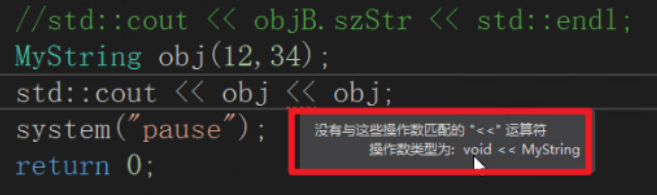
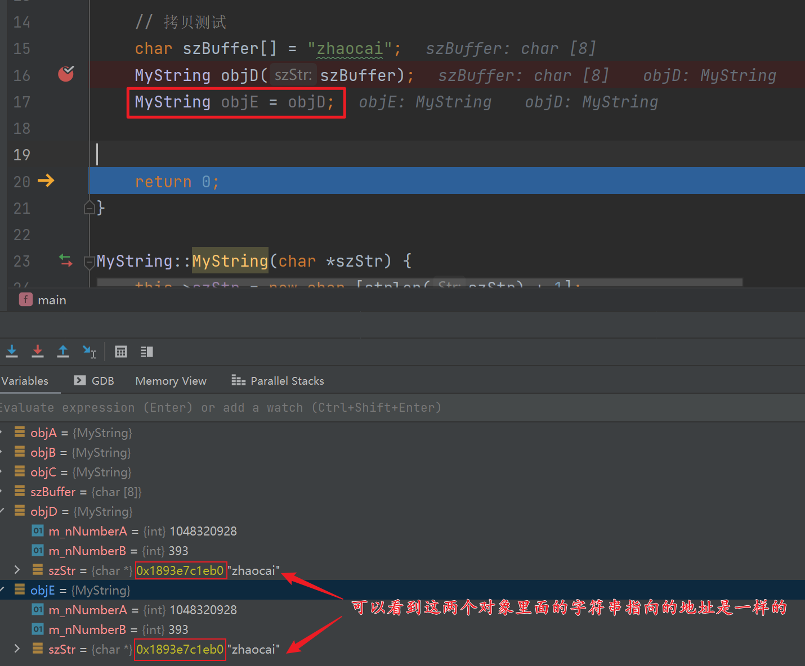
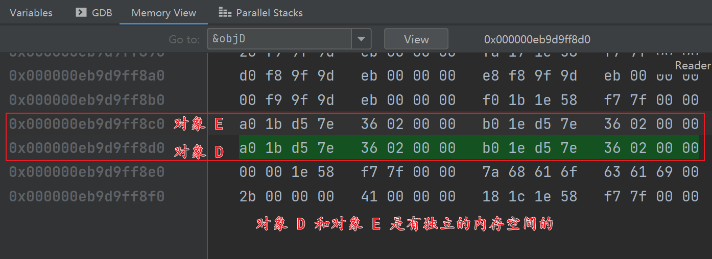
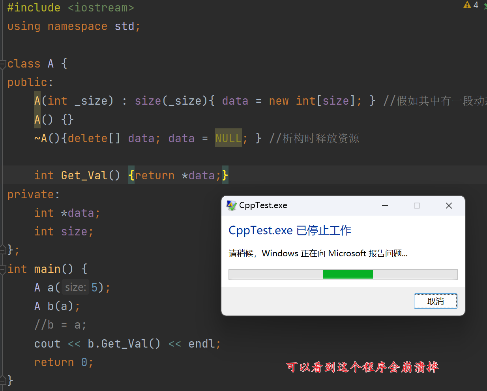
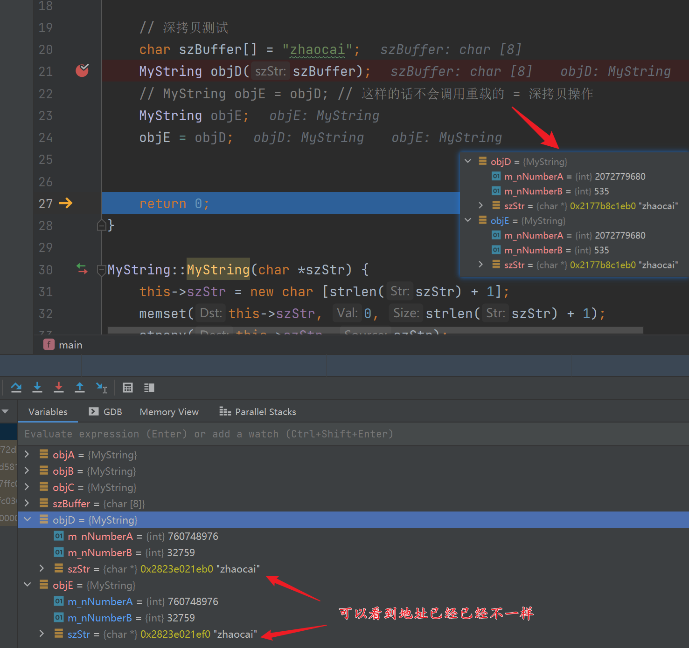

C++ 允许在同一作用域中的某个函数和运算符指定多个定义，分别称为函数重载和运算符重载 。
重载声明是指一个与之前已经在该作用域内声明过的函数或方法具有相同名称的声明，但是它们的参数列表和定义（实现）不相同。
函数重载
这些同名函数的形式参数（指参数的个数、类型或者顺序）必须不同。不能仅通过返回类型的不同来重载函数。
void print(int i) {}
void print(double i) {}
void print(char c[]) {}
运算符重载
重载的运算符是带有特殊名称的函数，函数名是由关键字
operator和其后要重载的运算符符号构成的。与其他函数一样，重载运算符有一个返回类型和一个参数列表。operator 是关键字，它与重载的运算符一起构成函数名。
Box operator+(const Box&);
---------
返回值类型 类名::operator重载的运算符(参数表) {
……
}
可重载的运算符列表
| 双目算术运算符 | + (加)，-(减)，*(乘)，/(除)，% (取模) |
|---|---|
| 关系运算符 | ==(等于)，!= (不等于)，< (小于)，> (大于)，<=(小于等于)，>=(大于等于) |
| 逻辑运算符 | |
| 单目运算符 | + (正)，-(负)，*(指针)，&(取地址) |
| 自增自减运算符 | ++(自增)，--(自减) |
| 位运算符 | |
| 赋值运算符 | =, +=, -=, *=, /= , %= , &=, |
| 空间申请与释放 | new, delete, new[ ] , delete[] |
| 其他运算符 | ()(函数调用)，->(成员访问) “->”运算符是成员访问运算符，这种单目运算符只能被重载为成员函数，,(逗号)，[](下标) |
数据类型 类名::operator->();new和delete只能被重载为类的成员函数，不能重载为友元。而且，无论是否使用关键字static进行修饰，重载了的new和delete均为类的静态成员函数。
不可重载的运算符列表
.：成员访问运算符.*, ->*：成员指针访问运算符::：域运算符sizeof：长度运算符?:：条件运算符#： 预处理符号- 类外/内重载：this 指针的区别。
单目运算符，类内（成员函数）重载
#include <iostream>
#include <exception>
#include <cstring>
using namespace std;
class MyString {
public:
int m_nNumberA;
int m_nNumberB;
char * szStr;
public:
MyString() {};
MyString(int nNumberA, int nNumberB): m_nNumberA(nNumberA), m_nNumberB(nNumberB) {};
MyString(char * szStr);;
MyString operator+(const MyString &objB);
};
#include "main.h"
int main() {
MyString objA(11, 22);
MyString objB(33, 44);
MyString objC = objA + objB;
cout << objC.m_nNumberA << endl;
cout << objC.m_nNumberB << endl;
return 0;
}
MyString::MyString(char *szStr) {
this->szStr = new char [strlen(szStr) + 1];
memset(this->szStr, 0, strlen(szStr) + 1);
strcpy(this->szStr, szStr);
}
MyString MyString::operator+(const MyString &objB) { // 有一个隐含的 this 指针
MyString tmpObj;
tmpObj.m_nNumberA = this->m_nNumberA + objB.m_nNumberA;
tmpObj.m_nNumberB = this->m_nNumberB + objB.m_nNumberB;
return tmpObj;
}
- c++ - overloaded 'operator+' must be a unary or binary operator error - Stack Overflow
重载
'operator+'必须是一元或二元运算符错误。overloaded 'operator+' must be a unary or binary operator (has 3 parameters)
听起来您已将运算符声明为成员函数。成员函数采用隐式第一个参数，这意味着您的运算符现在采用三个参数。以下两个办法可以解决此错误：
- 可以通过将其设为非成员函数。
- 或者减少一个参数。
前置 ++ 和 后置 ++
若想要实现 ++(++a) 这种连续自加，就要返回其对象的引用，这样才能保证操作的是同一块内存空间，否则就只是单纯的赋值操作，原来的对象并未被修改。
#include <iostream>
#include <exception>
#include <cstring>
using namespace std;
class MyString {
public:
int m_nNumberA;
int m_nNumberB;
char * szStr;
public:
MyString() {};
MyString(int nNumberA, int nNumberB): m_nNumberA(nNumberA), m_nNumberB(nNumberB) {};
MyString(char * szStr);;
MyString operator+(const MyString &objB);
MyString operator++(); // 前置 ++
MyString operator--();
MyString operator++(int); // 后置 ++
MyString operator--(int);
};
#include "main.h"
int main() {
MyString objA(11, 22);
MyString objB(33, 44);
MyString objC = objA + objB;
cout << objC.m_nNumberA << endl;
cout << objC.m_nNumberB << endl;
cout << --objC.m_nNumberA << endl;
cout << --objC.m_nNumberB << endl;
return 0;
}
MyString::MyString(char *szStr) {
this->szStr = new char [strlen(szStr) + 1];
memset(this->szStr, 0, strlen(szStr) + 1);
strcpy(this->szStr, szStr);
}
MyString MyString::operator+(const MyString &objB) {
MyString tmpObj;
tmpObj.m_nNumberA = this->m_nNumberA + objB.m_nNumberA;
tmpObj.m_nNumberB = this->m_nNumberB + objB.m_nNumberB;
return tmpObj;
}
// 前置 ++，先加后用
MyString MyString::operator++() {
this->m_nNumberA++;
this->m_nNumberB++;
return *this;
}
// 后置 ++，先用后加
MyString MyString::operator++(int) {
MyString tmp = *this;
this->m_nNumberA++;
this->m_nNumberB++;
return tmp;
}
MyString MyString::operator--() {
this->m_nNumberA--;
this->m_nNumberB--;
return *this;
}
MyString MyString::operator--(int) {
MyString tmp = *this;
this->m_nNumberA--;
this->m_nNumberB--;
return tmp;
}
下标运算符 [ ] 重载
int main() {
// [] 重载测试
int arr[2] = {2, 5}; // 从下标 2 开始，往后 3 个。
char szBuffer1[] = "zhaocai";
MyString objF(szBuffer1);
MyString objG;
objG = objF[arr];
cout << objG.szStr <<endl; // aoc
return 0;
}
// 实现字符串切片
MyString MyString::operator[](int arr[2]) {
size_t nLength = arr[1] - arr[0]; // 5 - 2 = 3
MyString tmpStr;
tmpStr.szStr = new char[nLength + 1];
memset(tmpStr.szStr, 0, nLength + 1);
for (size_t i; i<nLength; i++) {
tmpStr.szStr[i] = this->szStr[i + arr[0]];
}
return tmpStr;
}
() 运算符重载
函数调用运算符 () 可以被重载用于类的对象。当重载 () 时，不是创造了一种新的调用函数的方式，相反地，这是创建一个可以传递任意数目参数的运算符函数。
- 只能说明成类的非静态成员函数
函数类型 类名::operator()(参数表)- 常量与指针间的转换 warning: ISO C++ forbids converting a string constant to 'char*' [-Wwrite-strings]_sober0314的博客-CSDN博客
-
// 在C++中， char* p = "abc"; // valid in C, invalid in C++ // 会跳出警告：warning: ISO C++ forbids converting a string constant to 'char*' [-Wwrite-strings] //改成下面会通过 warning char* p = (char*)"abc"; // OK //或者改成下面： char const *p = "abc"; // OK 字符串常量是不能转化为指针变量的。指针数组中存放的是指针变量，指针变量存放的是右边每一个字符串常量的内存首地址，是指示器。右边则只是字符串常量即字面上“how r u ?" 这些。指针即地址和常量有本质性的区别。编译器虽然可以编译，但是会给出警告，表明这是不符合规定的。
char *p[3] = { "how r u ?", "i'm fine,thanks.", "and u ?"}; // 建议写成 const char *p[3] = {};- C++ 函数调用运算符 () 重载 | 菜鸟教程 (runoob.com)
int main() {
// () 重载测试
char szBuffer1[] = "zhaocai";
MyString objH(szBuffer1);
MyString objI;
objI = objH("mao");
cout << objH.szStr <<endl;
cout << objI.szStr <<endl;
return 0;
}
MyString MyString::operator()(const char *szBuffer) {
MyString tmp;
size_t nLength = strlen(szBuffer);
size_t nSumLength = strlen(this->szStr) + nLength + 1;
tmp.szStr = new char [nSumLength];
memset(tmp.szStr, 0, nSumLength);
strcat(tmp.szStr, this->szStr);
strcat(tmp.szStr, szBuffer);
return tmp;
}
输入（>>）输出（<<）运算符重载
- 需要把运算符重载函数声明为类的友元函数，这样我们就能不用创建对象而直接调用函数。【当然你想创建对象再调用也是可以的~】
- C++ 输入输出运算符重载 | 菜鸟教程 (runoob.com)
int main() {
// 输入输出重载测试
MyString objA;
cin >> objA;
cout << objA << endl;
return 0;
}
MyString MyString::operator()(const char *szBuffer) {
MyString tmp;
size_t nLength = strlen(szBuffer);
size_t nSumLength = strlen(this->szStr) + nLength + 1;
tmp.szStr = new char [nSumLength];
memset(tmp.szStr, 0, nSumLength);
strcat(tmp.szStr, this->szStr);
strcat(tmp.szStr, szBuffer);
return tmp;
}
// >> 参数需要传地址，不然修改了你也传不出来。形参和实参~
istream &operator>>(istream &cin, MyString &obj) {
cin >> obj.m_nNumberA >> obj.m_nNumberB;
return cin;
}
ostream &operator<<(ostream &cout, MyString obj) {
cout << obj.m_nNumberA << endl;
cout << obj.m_nNumberB << endl;
return cout;
}
【注意】：如果需要连续使用 >> 或者 << 则需要返回流对象。若函数的返回值为 void 则会出现一下错误。

拷贝构造
深拷贝和浅拷贝的区别是在对象状态中包含其它对象的引用的时候，当拷贝一个对象时，如果需要拷贝这个对象引用的对象，则是深拷贝，否则是浅拷贝。
浅拷贝只是对象数据之间的简单赋值（如：b.size = a.size, b.data = a.data）。
如果对象中没有其他的资源（如：堆，文件，系统资源等），即成员不包括指针和引用时，则深拷贝和浅拷贝没有什么区别。==【因为涉及指针的时候，那你简单赋值，指针指向的也是同一个地址。（指针的本质不就是存的值是一个地址吗？那么他们存的值（地址）就是一样的），所以指向同一内存空间】==
如你设计了一个没有类而没有提供它的拷贝构造函数，当用该类的一个对象去给令一个对象赋值时所执行的过程就是浅拷贝。
浅拷贝
#include <iostream>
#include <exception>
#include <cstring>
using namespace std;
class MyString {
public:
int m_nNumberA;
int m_nNumberB;
char * szStr;
public:
MyString() {};
MyString(int nNumberA, int nNumberB): m_nNumberA(nNumberA), m_nNumberB(nNumberB) {};
MyString(char * szStr);;
MyString operator=(MyString obj); // 浅拷贝
};
#include "main.h"
int main() {
// 拷贝测试
char szBuffer[] = "zhaocai";
MyString objD(szBuffer);
MyString objE = objD;
return 0;
}
MyString::MyString(char *szStr) {
this->szStr = new char [strlen(szStr) + 1];
memset(this->szStr, 0, strlen(szStr) + 1);
strcpy(this->szStr, szStr);
}
// 浅拷贝
MyString MyString::operator=(MyString obj) {
this->m_nNumberA = obj.m_nNumberA;
this->m_nNumberB = obj.m_nNumberB;
return *this;
}



这里 b 的指针 data 和 a 的指针指向了堆上的同一块内存，a 和 b 析构时，b 先把其 data 指向的动态分配的内存释放了一次，而后 a 析构时又将这块已经释放过的内存再释放一次。【对同一块内存多次释放问题】
对同一块内存释放执行 2 次及 2 次以上的释放会造成内存泄露或者是程序 crash！
深拷贝
#include "main.h"
int main() {
// 深拷贝测试
char szBuffer[] = "zhaocai";
MyString objD(szBuffer);
// MyString objE = objD; // 这样的话不会调用重载的 = 深拷贝操作，因为这样调用的是拷贝构造函数，而默认情况下拷贝构造函数就是浅拷贝。【规定就是这样的】
// 所以要分开写，先初始化，再赋值。
MyString objE;
objE = objD;
return 0;
}
MyString::MyString(char *szStr) {
this->szStr = new char [strlen(szStr) + 1];
memset(this->szStr, 0, strlen(szStr) + 1);
strcpy(this->szStr, szStr);
}
// 深拷贝
MyString MyString::operator=(const MyString &obj) {
this->m_nNumberA = obj.m_nNumberA;
this->m_nNumberB = obj.m_nNumberB;
this->szStr = new char [strlen(obj.szStr) + 1];
memset(this->szStr, 0, strlen(obj.szStr) + 1);
strcpy(this->szStr, obj.szStr);
return *this;
}

= 运算符重载不调用问题
练习
实现一个字符串类，重载运算符
- +（拼接）
- -（减去子串）
- *（复制拼接）
- = （赋值）
- == （判断相等）
前人栽树